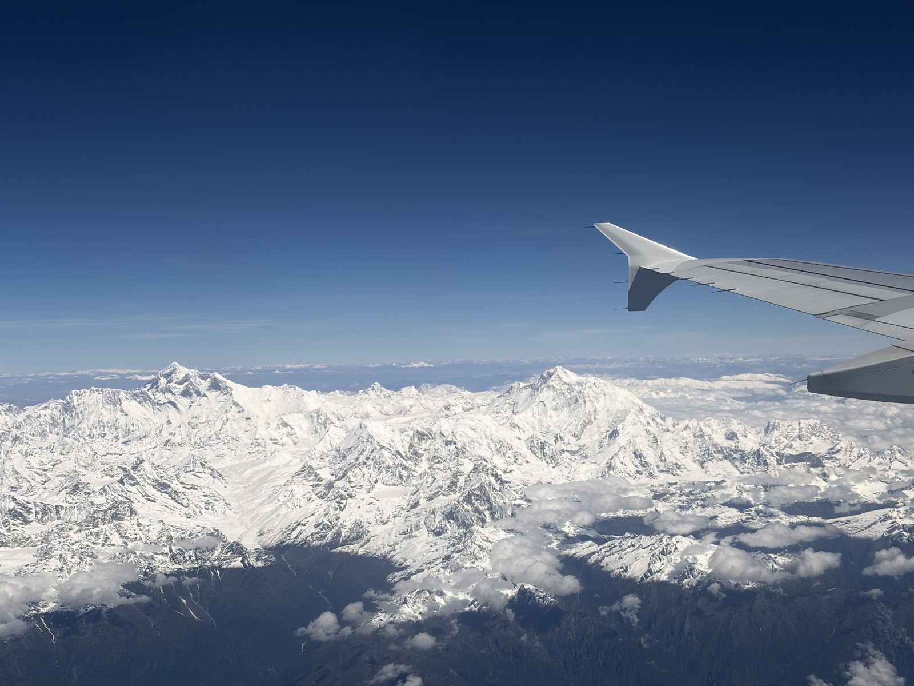
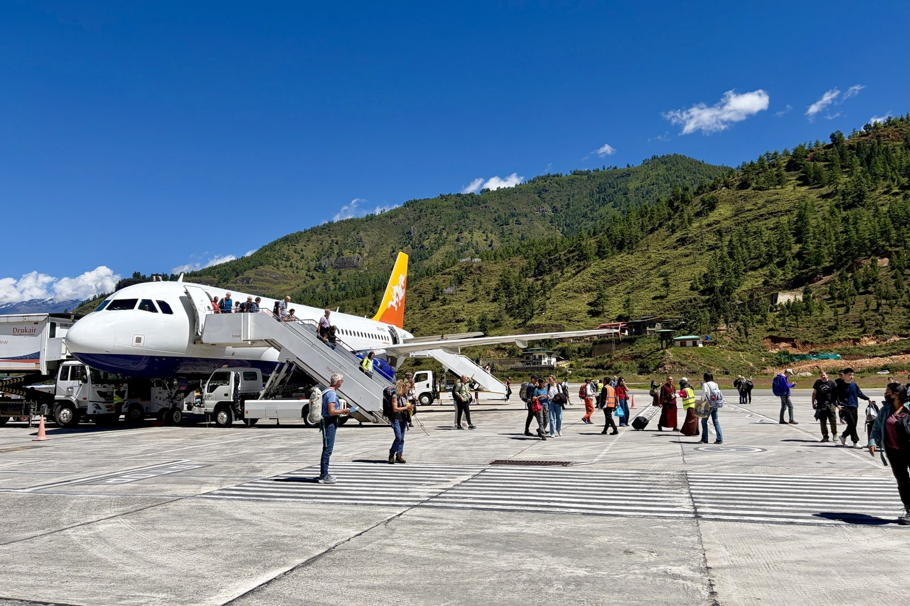
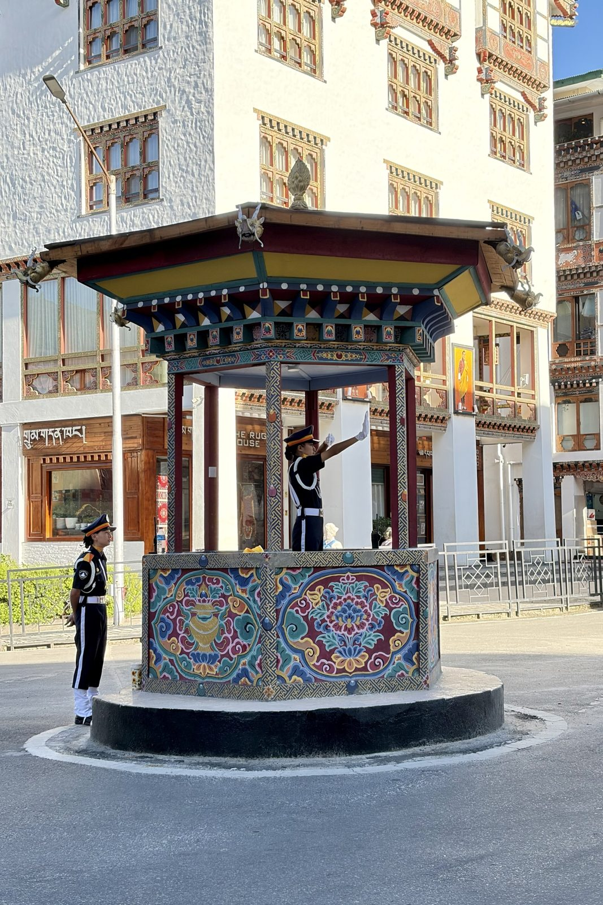
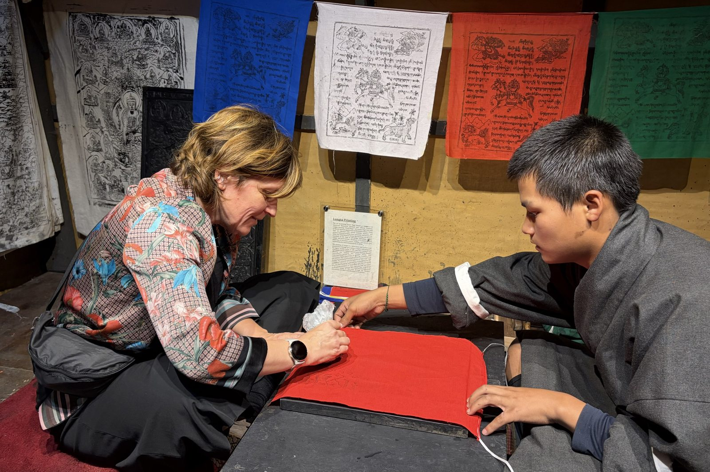
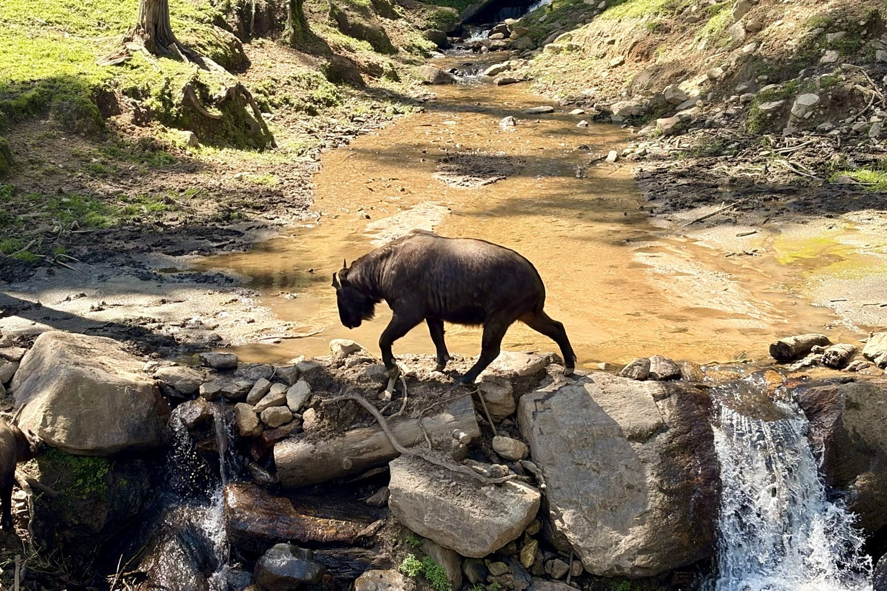
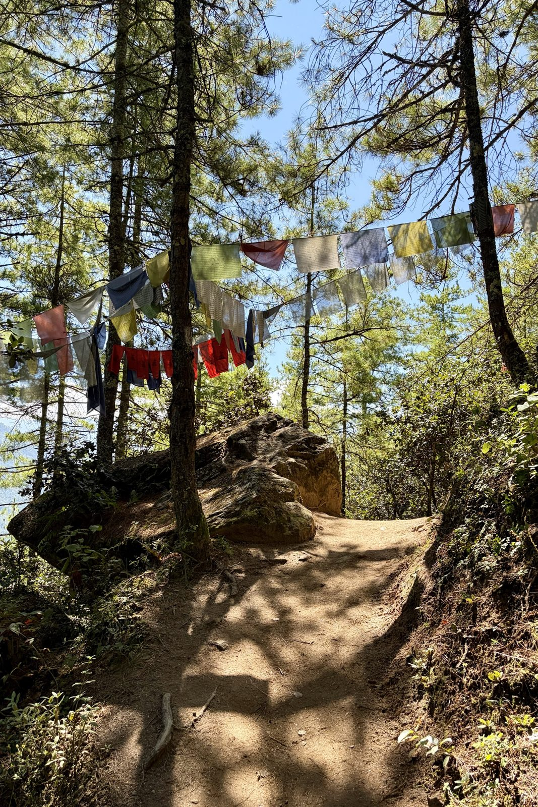
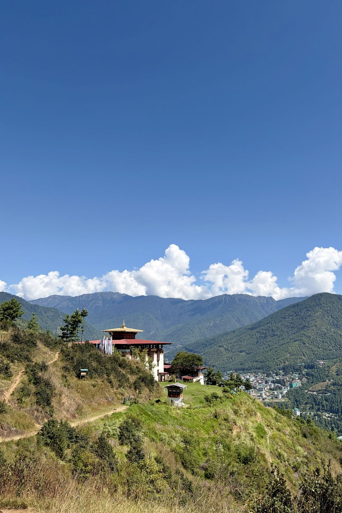
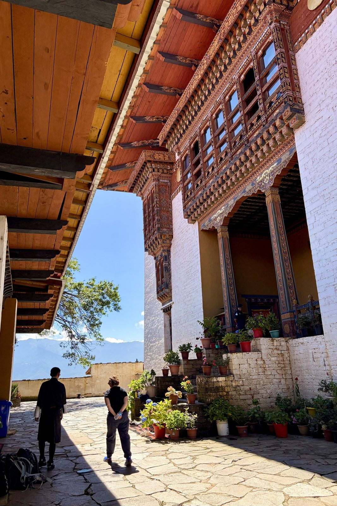
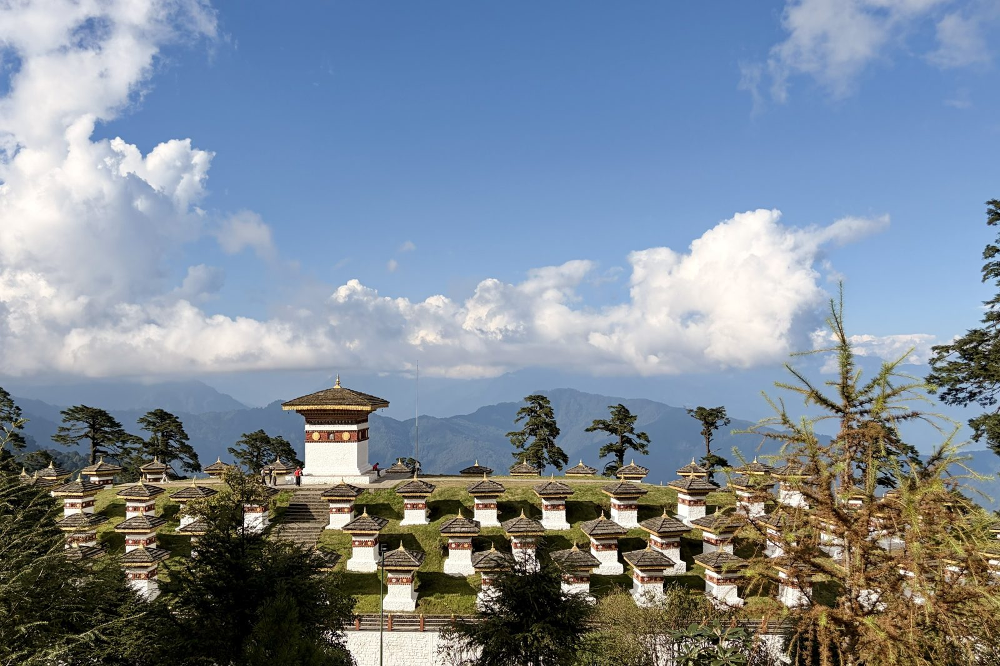

Send whatever you've got, in whatever state — a couple of lines typed on a phone, a list of names, a thing that went wrong, a meal worth remembering, a person you met. It gets written up, filed under the right leg, and where it changes the advice elsewhere on the site, the other pages get updated to match.
Useful when you have it: roughly when, roughly where, and who was involved. Everything else is optional. Photographs can be dropped alongside and captioned.
Two kinds of entry are worth separating:what happened, which lives here, and what we learned about the place, which goes on Field notes. If something is both, it gets written up here and cross-linked there.
Kathmandu Valley
26 – 28 September · Patan, Boudhanath, Pashupatinath
Nothing filed yet
The arrival, the first evening in Patan, the temple day. Anything from the Indra Jatra crowds if you made it up to Durbar Square.
Bhutan
28 September – 6 October · Thimphu, Punakha, Phobjikha, Paro, Bumdra
Mon 28 September · KB401 Kathmandu → Paro
The flight in, along the roof of the world

From the left-hand side, heading east: most likely Everest on the left and Makalu, the clean pyramid, on the right.
A favourite part of the whole trip, and it lasted barely an hour. Sitting on the left paid off: once the plane climbed out of the valley the whole range lined up along the window — snow from one side of the frame to the other, the high summits standing clear of everything else, and the Tibetan plateau a flat brown line beyond. Worth every bit of the fuss about seat allocation.
DrukairEverestleft side
Mon 28 September · Paro International Airport
Down between the hills, and out onto the apron

Paro: no jet bridges, no terminal buses — down the steps and across the tarmac, with the valley wall close enough to count the trees.
After the Himalaya, the descent: the plane threads down the Paro valley with forested ridges on both sides before a last turn onto the runway, which is why only a small group of specially trained pilots are cleared to fly in. Then the steps, warm sun, thin clean air at about 2,200 m, and the first look at Bhutanese buildings — even the airport is built in the traditional style, painted window frames and all.
ParoDrukairarrival
Mon 28 September · Thimphu
A capital with no traffic lights

The pavilion on Norzin Lam, Thimphu's main street, where the traffic is still directed by hand.
Thimphu famously has no traffic lights. One was put up once, and residents complained it was too impersonal, so it came down again and the police went back to directing the junction from this painted pavilion — every gesture crisp, white gloves and all. Watching it for a few minutes is a fair introduction to the country: everything a little slower, more deliberate and more decorated than it strictly needs to be.
Thimphustreet life
Mon 28 September · School of Arts and Crafts, Thimphu
Printing our own prayer flag

Lungta printing: cloth over an inked woodblock, rubbed by hand, with a student keeping it straight.
The school teaches the thirteen traditional crafts — painting, woodcarving, sculpture, embroidery and the rest — and visitors get to try one. Ours was printing lungta, the "wind horse" prayer flags you see strung across every pass and bridge: the cloth goes over a carved and inked woodblock and is rubbed until the horse, the prayers and the four guardian animals come through. The five colours stand for the elements, and the idea is that the wind carries the prayers off the flag. Having made one, we look at every string of them differently now.
Thimphucraftsprayer flags
Tue 29 September · Motithang Takin Preserve, Thimphu
The national animal, assembled from leftovers

A takin picking its way across the stream in the preserve above Thimphu.
The takin looks as if it was put together from spare parts, and according to Bhutanese legend that's exactly what happened. In the 15th century the saint Drukpa Kunley — the "Divine Madman", Bhutan's most beloved and least respectable holy man — was asked by villagers to perform a miracle. He demanded a whole cow and a whole goat for lunch, ate both, then stuck the goat's head on the cow's skeleton, snapped his fingers, and the creature got up and wandered off to graze.
Zoologically it's a goat-antelope, closest to the musk ox and the sheep, and built for steep cold slopes: thick oily coat, a big Roman nose that warms the air on the way in, and a weight of up to 350 kg on surprisingly nimble legs. It became the national animal in 2005. The preserve exists by accident — Thimphu once had a small zoo, which the Fourth King closed as un-Buddhist, but the released takin refused to leave and kept wandering the streets of the capital looking for food, so they were given this patch of hillside forest instead.
ThimphuwildlifeDrukpa Kunley
Tue 29 September · Wangditse Lhakhang, above Thimphu
The walk up to Wangditse

The trail through the pines, strung with lungta.

Wangditse on its ridge, with Thimphu down in the valley.

Inside the courtyard: carved, painted eaves and flowers on every step.
A walk along the hillside above the city — through blue pine, under strings of prayer flags, and out onto an open ridge with Thimphu laid out below. Wangditse Lhakhang was founded in 1715 and is one of the oldest temples around the capital; after centuries of earthquakes and wear it was carefully restored in recent years, which is why the woodwork looks so fresh.
On the flags: the coloured ones along the trail are lungta, like the one we printed the day before — blue, white, red, green and yellow for sky, cloud or air, fire, water and earth, always hung in that order. Each time the wind moves them the prayers are thought to be carried outward, so a flag fading to grey is doing its job. The tall white flags on poles, like the cluster beside the temple, are a different thing: manidar, raised in sets of 108 for someone who has died.
Thimphuwalkprayer flags
Tue 29 September · Dochula Pass, ~3,100 m
108 chortens on the pass

The Druk Wangyal chortens, with the eastern Himalaya hiding behind the cloud.
The road from Thimphu to Punakha crosses the range at Dochula, and the top of the pass is crowned with the 108 Druk Wangyal chortens — 108 being the sacred number in Buddhism, the number of beads on a mala. They're recent: built in 2004 by the eldest Queen Mother, Ashi Dorji Wangmo Wangchuck, as a memorial for the Bhutanese soldiers killed in December 2003, when the army drove Indian separatist militants out of their camps in the southern forests. The temple on the hillside beside them honours the Fourth King, who led the troops himself.
On a clear day — mostly winter mornings — the whole eastern Himalaya lines up behind them, including Gangkar Puensum at 7,570 m, the highest mountain in the world that has never been climbed. Bhutan closed its high peaks to mountaineering in the 1990s out of respect for the gods believed to live on them, so it will likely stay that way. We got clouds instead, which at 3,100 m is the usual deal.
Dochulachortenshistory
Still to come
The astrology consultation and blessing, the homestay, wearing gho and kira at Punakha Dzong, the night at Bumdra, coming down onto Tiger's Nest. And the guide and driver — the people usually turn out to be the story.
Nagarkot & Pokhara
6 – 7 October · the crossing, and two ridges
Nothing filed yet
Whether the Nagarkot sunrise delivered, how the transfer actually went, and the first sight of the Annapurnas from Sarangkot.
Mardi Himal
8 – 13 October · six days on the ridge
Nothing filed yet
Day by day if you want it that way, or just the parts worth keeping: the teahouses, the weather, how the bodies held up, whether Base Camp happened, and the walk down to Siding.
The last days
14 – 17 October · Pokhara, Bhaktapur, Kathmandu in Dashain
Nothing filed yet
The recovery day, Bhaktapur at dawn, and what Dashain looked like from the inside.